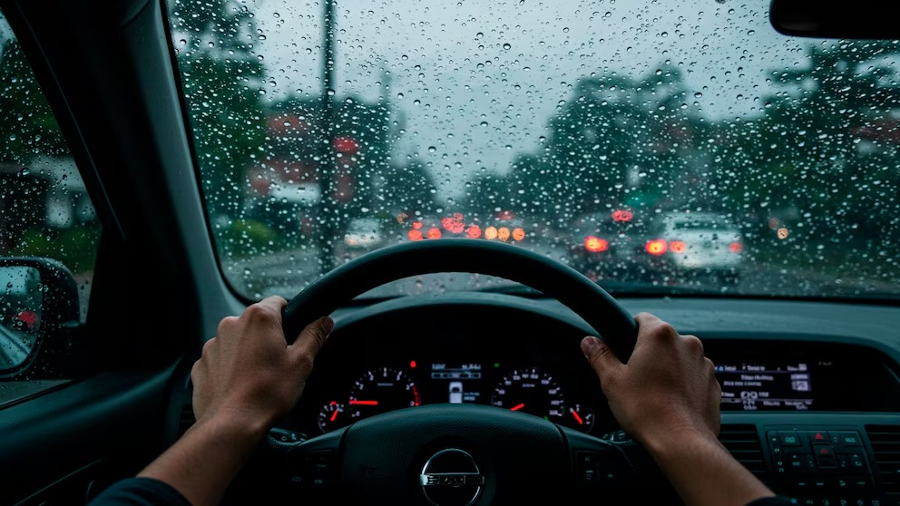

La lluvia reduce la visibilidad y la adherencia de los neumáticos, aumentando el riesgo de accidentes. Existen medidas simples que ayudan a manejar de forma más segura.
Consejos para manejar con lluvia
Cuando llueve, es fundamental reducir la velocidad y aumentar la distancia con otros vehículos. Esto permite reaccionar a tiempo ante cualquier imprevisto.
También es importante encender las luces bajas, incluso durante el día, para mejorar la visibilidad y ser visto por otros conductores.
Evitar maniobras bruscas y mantener los neumáticos en buen estado son factores clave para prevenir accidentes.
Conducción Segura
Lo primero que se debe saber es que no hay que tener miedo de conducir en piso mojado, pero sí es necesario poner toda la atención en el camino y el entorno, porque aun teniendo mucha precaución, los autos, motos o camiones que están delante, a los costados o detrás de uno, pueden no tenerla.
Si se encuentra una calle anegada parcialmente, unos 15 cm es un límite aceptable que permite el paso, pero si hay suficiente profundidad de agua como para levantar una ola baja, es recomendable entrar con velocidad lenta, unos 20 km/h pero que sea constante, sin detenerse. Eso permitirá que no se moje ninguna parte eléctrica del motor que podría generar que se detenga. Al salir de esa zona con mucha agua, hay que usar el freno suavemente apenas sea posible antes de la siguiente esquina, ya que pastillas, discos y cintas pueden estar mojadas y tener una primera frenada poco segura.
Imágen ilustrativa Infobae

Salir a conducir en lluvia no es difícil si mecánicamente el vehículo está en buena condición.
Solo hay que tener más paciencia y concentración en el tránsito y el entorno.
Fuente
Leer la noticia original en Infobae .